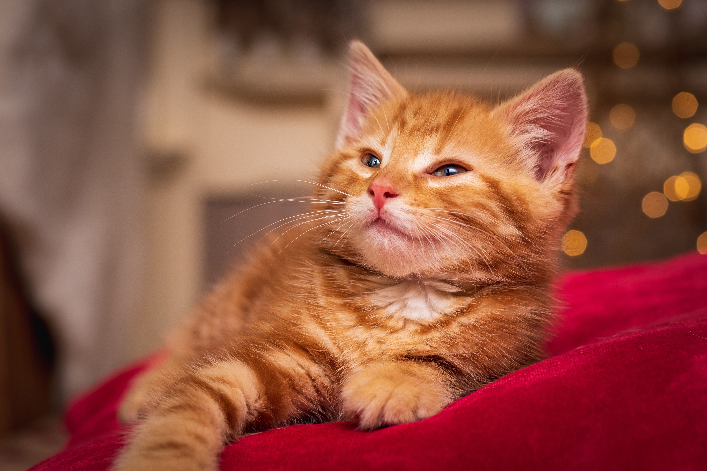
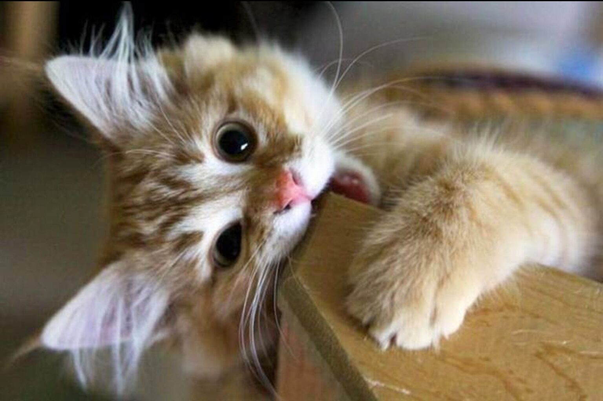
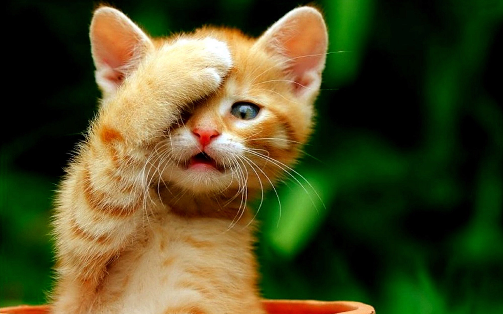
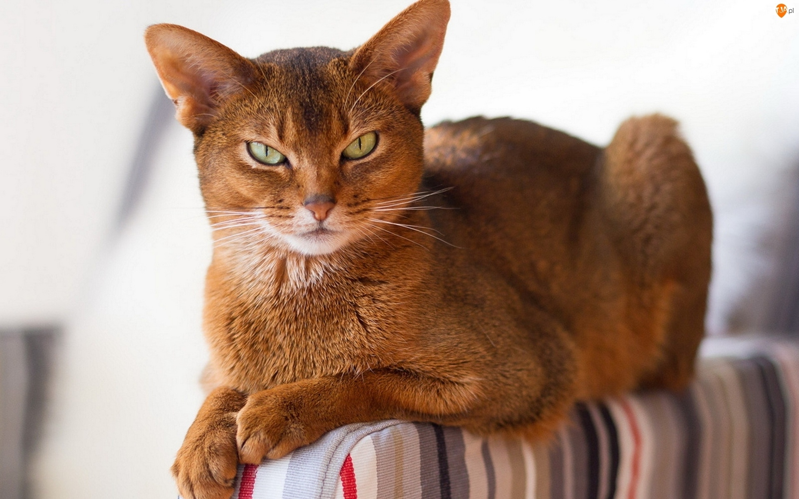

|  |  |  |  |
Я родилась в небольшом городке Анжеро-Судженск 5 июля 2004 года. Как и все дети ходила в детский садик вместе со своей сестрой. День мой там проходил обычно: завтрак, игры, обед, сончас и полдник. Обожала спать, есть, ходить на утренники и рассказывать стихи. Именно в детском саде начала увлекаться рисованием.
Фото из детства.Здесь я только научилась ходить!
Чутка повзрослев, в 2010 году я пошла в 1 «Б» класс школы №22. Обучение в начальных классах проходило обычно. Была хорошистом. Занималась в различных секциях. В 7 классе решила записаться в художественную школу. Успешно участвовала в районных соревнованиях по рисованию. В 2017 году была отмечена грамотой за высокое достижение в изучении литературы. В том же году заняла первое место на городской олимпиаде по русскому языку. Имеются много грамот по разным направлениям: «Русский медвежонок», «Кенгуру» и «Британский бульдог».
Сейчас я учусь уже в 11 классе в физико-математическом профиле. Проявляю особые успехи в изучении математики, физики и чуть-чуть информатики. Также продолжаю заниматься рисованием. В этом году заканчиваю художественную школу на отлично. Принимаю активное участие в школьной жизни, защищаю честь школы на различных предметных олимпиадах и спортивных соревнованиях. Активно участвую в интеллектуальных конкурсах разного уровня. Готовлюсь к сдаче ЕГЭ. Собираюсь поступать в ПТУ.
Веду здоровый образ жизни. Очень нравится заниматься спортом и гулять в свободное время.